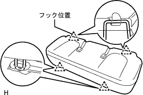

フロントシートベルトRH 取り付け |
| 1. フロントシート インナベルトASSY RH取り付け |
 |
ボルトでフロントシート インナベルトASSY RHを取り付ける。
ケーブルのクランプを取り付け、コネクタを接続する。
| 2. フロントシート クッション シールド INN RH取り付け |
クッションシールドのツメをかん合させる。
スクリューでフロントシートクッションシールドINN RHを取り付ける。
| 3. フロントシート アウタベルトASSY RH取り付け |
ELRロック開始の傾斜角度点検
 |
リトラクタを取り付け状態から静かに動かしたとき、全方向に対してベルトのロックが15°以内でロックしないことを点検し、45°以上でロック状態を保持することを点検する。
ボルト2本で、フロントシートアウタベルトASSY RHのリトラクタ部を仮締めする。
上部→下部の順にフロントシートアウタベルトASSY RHのリトラクタ部を本締めする。
ボルトで、フロントシートアウタベルトASSY RHのショルダアンカ部を取り付ける。
 |
コネクタ(プリテンショナ用)を接続し、ロッキングボタンをロックさせる。
ELRロック点検
車両取り付け状態において、すばやくシートベルトを引き出したとき、シートベルトがロックすることを確認する。
| 4. シート ベルト アンカ カバー キャップ取り付け |
 |
ツメのかん合を合わせ、シートベルトアンカカバーキャップを取り付ける。
| 5. サイドNO.1 トリムASSY RH取り付け |
 |
クリップおよびツメをかん合させサイドNo.1トリムASSYを取り付ける。
| 6. フロントシート アウタベルトASSY RH取り付け（フロアアンカ部） |
ボルトで、フロントシートアウタベルトASSY RHのフロアアンカ部を取り付ける。
| 7. ラップベルト アウタアンカ カバー取り付け |
 |
ツメのかん合を合わせ、ラップベルト アウタアンカ カバーを取り付ける。
| 8. リヤシート 3ポイントタイプ ベルトASSY OUT RH取り付け（フロアアンカ部） |
ボルトでリヤシート 3ポイントタイプ ベルトASSY OUT RH（フロアアンカ部）を締め付ける。
| 9. フロントドア オープニングトリム ウェザストリップ RH取り付け |
 |
ウェザストリップのペイントマーク(白色、どちらか1箇所)を合わせ、フロントドアオープニングトリムウエザストリツプRHを取り付ける。
| 10. フロントドアスカッフ プレート RH取り付け |
 |
スカッフプレート前端部および後端部のツメをかん合させる。
ツメをかん合させ、フロントドアスカッフプレートRHを取り付ける。
| 11. リヤシートクッションASSY取り付け（リヤシート分割可倒式） |
リヤシートクッションASSY前側をリヤシート クッション ロック ストライカにロックさせる。
リヤシートベルトを、リヤシートクッションカバー & パッド後部のゴムバンドに通す。
 |
ボルトで、リヤシートヒンジLHを取り付ける。
リヤシートバックヒンジＲＨにスナップリングを取り付ける。
リヤシートヒンジRHを、リヤシートクッションASSY右側ブラケットの角パイプに挿入する。
| 12. リヤシートバックASSY LH取り付け（リヤシート分割可倒式） |
ボルト2本でリヤシートバックを取り付ける。
 |
クリップ2個を取り付ける。
| 13. リヤシートバックASSY RH取り付け（リヤシート分割可倒式） |
ボルト2本でリヤシートバックを取り付ける。
クリップ2個を取り付ける。
| 14. リヤシートバック ヒンジSUB-ASSY RH取り付け（リヤシート一体可倒式） |
 |
ボルトで、リヤシートバツクヒンジRHを締め付ける。
| 15. リヤシートバック ヒンジSUB-ASSY LH取り付け（リヤシート一体可倒式） |
ボルトで、リヤシートバツクヒンジLHを締め付ける。
| 16. リヤシートクッションASSY取り付け（リヤシート一体可倒式） |
リヤシートクッションASSY後部のフックをかん合させる。
リヤシートベルトを、リヤシートクッションカバー & パッド後部のゴムバンドに通す。
|  |
リヤシートクッションASSY前部のフックをかん合させる。
| 17. リヤシートバックASSY取り付け（リヤシート一体可倒式） |
ボルト2本をでリヤシートバックASSYを取り付ける。
 |
クリップ2個を取り付ける。
| 18. スライドアジャスターロック同期点検 |
スライド操作したとき、左右のアジャスターが同時にロックすることを点検する。
| 19. シートベルト機能点検 |
イグニッションスイッチをONにする。
フロントシートＡＳＳＹ RHに座り、シートベルトのタングプレートをバックルに挿入していないとき、運転席シートベルトウォーニングインジケータが点滅することを点検する。
シートベルトのタングプレートをバックルに挿入したとき、コンビネーションメータASSYの運転席シートベルトウォーニングインジケータが消灯することを点検する。